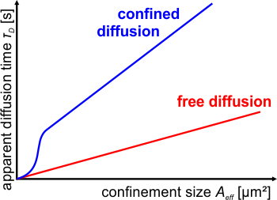
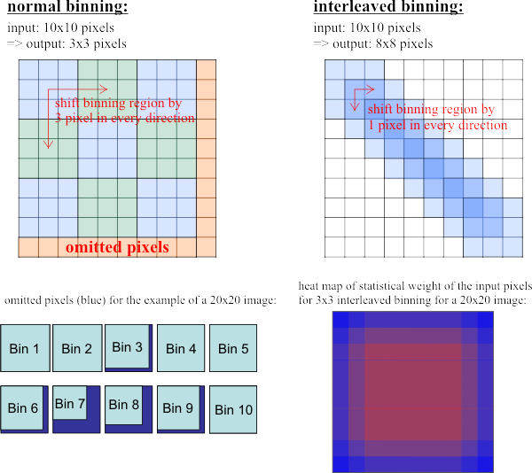

$$qf_commondoc_header.start$$ $$qf_commondoc_header.end$$
$$see:See also the Tutorial: FCS Diffusion Law.$$
Introduction
QuickFit can also calculate the FCS diffusion law from fits $$ref:Wawrezinieck2015:Wawrezinieck, L., H. Rigneault, D. Marguet, and P.-F. Lenne. 2005. Fluorescence Correlation Spectroscopy Diffusion Laws to Probe the Submicron Cell Membrane Organization. Biophys J. 89: 4029-4042.$$ $$ref:Lenne2006:Lenne P, Wawrezinieck L, Conchonaud F, Wurtz O, Boned A, Guo X, Rigneault H, He H, Marguet D (2006) Dynamic molecular confinement in the plasma membrane by microdomains and the cytoskeleton meshwork. The EMBO Journal 25: 3245-3256 doi: 10.1038/sj.emboj.7601214 [Accessed May 5, 2015]$$ $$ref:BAG2012:Bag, N., J. Sankaran, A. Paul, R.S. Kraut, and T. Wohland. 2012. Calibration and limits of camera-based fluorescence correlation spectroscopy: a supported lipid bilayer study. ChemPhysChem. 13: 2784-2794.$$ $$ref:Ng2015:Ng X W, Bag N, Wohland T (2015) Characterization of Lipid and Cell Membrane Organization by the Fluorescence Correlation Spectroscopy Diffusion Law. CHIMIA International Journal for Chemistry 69: 112-119 doi: 10.2533/chimia.2015.112$$. This has recently found some application to the dynamics of protein in artificial and cell membranes. Basically, the diffusion time $(\tau_D)$ is plotted as a function of the effective focus area $(A_{eff})$.

For a Gaussian focus with 1/e2-radius $(w_{xy)$ we get $[A_{eff}=w_{xy}^2]$, or for camera-based imFCS with pixel size $(a)$ and PSF-1/e2-radius $(w_{xy})$) we get:$[A_{eff}=\frac{a^2}{\left(\mbox{erf}\left(\frac{a}{w_{xy}}\right)+\frac{w_{xy}}{\sqrt{\pi}\cdot a}\cdot\left(e^{-(a/w_{xy})^2}-1\right)\right)^2}.]$ To sample different values of $(A_{eff})$, the data is binned to different virtual pixel sizes before correlation. Then all these binned datasets are fitted with an appropriate model (e.g. $$fitfunction:name:fcs_spim_diffe2_newveff$$ for SPIM-FCS data or $$fitfunction:name:fcs_tir_diffe2$$ for TIRF-FCS data). If the fit model does not directly have $(\tau_D)$ as a fit parameter, but rather the diffusion coefficient $(D)$, that Parameter can also be used: $[\tau_D=\frac{A_{eff}}{D}.]$
This graph is supposed to grow linearly: $[ f(A_{eff})=\tau_0+\frac{A_{eff}}{D_0}. ]$ With the parameters of this fit, the type of diffusion can be classified, as described in $$ref:Wawrezinieck2015:$$
In addition the tool described here can also create a broader range of plots, e.g. if not the binning is varied, but rather distance of pixel-pixel cross-correlations is changed, as described in e.g. $$ref:BAUM2014:Baum, M., Erdel, F., Wachsmuth, M., Rippe, K. (2014). Retrieving the intracellular topology from multi-scale protein mobility mapping in living cells. Nature Communications, 5. doi: 10.1038/ncomms5494$$, this tool can also plot the squared distance $(d^2)$ versus the measured diffusion time $(\tau_D)$ (or vice-versa).
Usage
$$see:See also the Tutorial: FCS Diffusion Law.$$
- Correlate the data as required, either with increasing binning (e.g. 1-10) or with increasing distances in distance CCD (DCCFx=1-10).
- Fit the data with an appropriate model(e.g. $$fitfunction:name:fcs_spim_diffe2_newveff$$ for SPIM-FCS data or $$fitfunction:name:fcs_tir_diffe2$$ for TIRF-FCS data).
- Open the imFCS RDR-editor by double-clicking any of the records in the project tree and choose the fit result set. The open the imFCS diffusion law tool by clicking the menu entry imagingFCS Tools | calculate FCS diffusion law-typed plots.
- A dialog will open, in which you have to select the files to use for the plot and the two parameters to plot against each other (e.g. D and Aeff, or τD and dx). On the RHS of the dialog, the plot will be created.
- If you want to keep the plot and its results, you can click on
 copy plot data to table RDR, which will create a new table RDR in the project, which contains and stores the plot with all its results.
copy plot data to table RDR, which will create a new table RDR in the project, which contains and stores the plot with all its results.
- In the window, you can select whether all (non-masked) pixels are to be used, or only the selected ones (the selection is used for all selected files, possibly rescaled to the new image size, e.g. for large binning).
- Since the two parameters do not always represent $(\tau_D)$ and $(A_{eff})$, these values may have to be calculated from the given parameters, e.g. $(\tau_D=A_{eff}/D)$ or $(A_{eff}=w_{xy}^2)$ (see above). So you can select the appropriate mode in the drop-down list mode.
- The tool assumes, that the parameters are given in units of μm2 for $(A_{eff})$ and seconds for $(\tau_D)$. To achieve this, you can given (multiplicative) scaling factors for each parameter. Usually the plugin is able to determine these automatically (the checkboxes default have to be activated).
- The tool is implemented in an independent window, which is updated, if you choose a new RDR in the calling RDR editor. The same happens, when you select new pixels. This way you can observe the diffusion law for different pixel selections.
- When correlating the data, it may make sense to choose the interleaved binning option, as then more pixels are available for larger binnings:

References
$$references$$